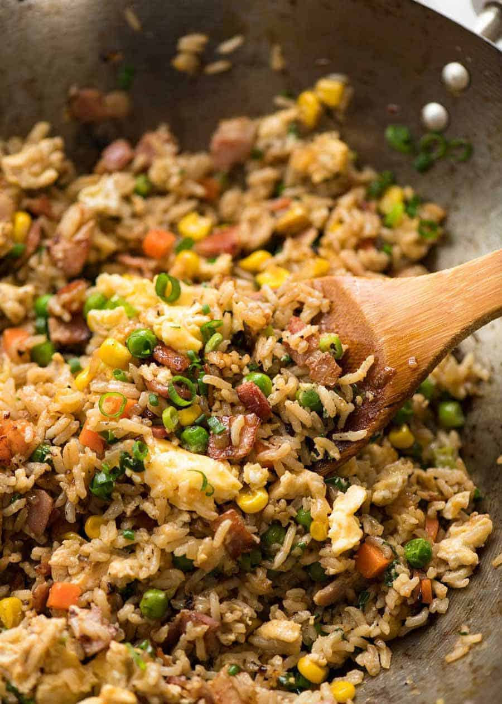

Fried Rice

Description
Fried rice is an Asian staple with endless variations. Enjoy this
Chinese style fried rice alone or with a meat-based main dish.
Ingredients
- White rice, calrose or jasmine
- Water
- Onions, chopped
- Garlic, grated
- Carrots, chopped
- Broccoli, chopped
- Green onions, chopped
- Soy sauce
- Peanut oil
- Chili powder
- MSG powder
Method
- Rinse rice thoroughly and cook in cool water. Allow rice to
cool before cooking fried rice.
- Heat a wok on medium-high heat and add peanut oil. Wok is
ready for cooking when the oil shimmers.
- Sauté onions and garlic for a few minutes till onions are
translucent and browning.
- Add remaining vegetables and spices. Cook for a few minutes
until fragrant and steaming.
- Stir in the rice and liberally add soy sauce. Cook for 10
minutes to marry all the flavors.
- Mix in MSG powder until fully dissolved and remove rice from
heat. Serve immediately.